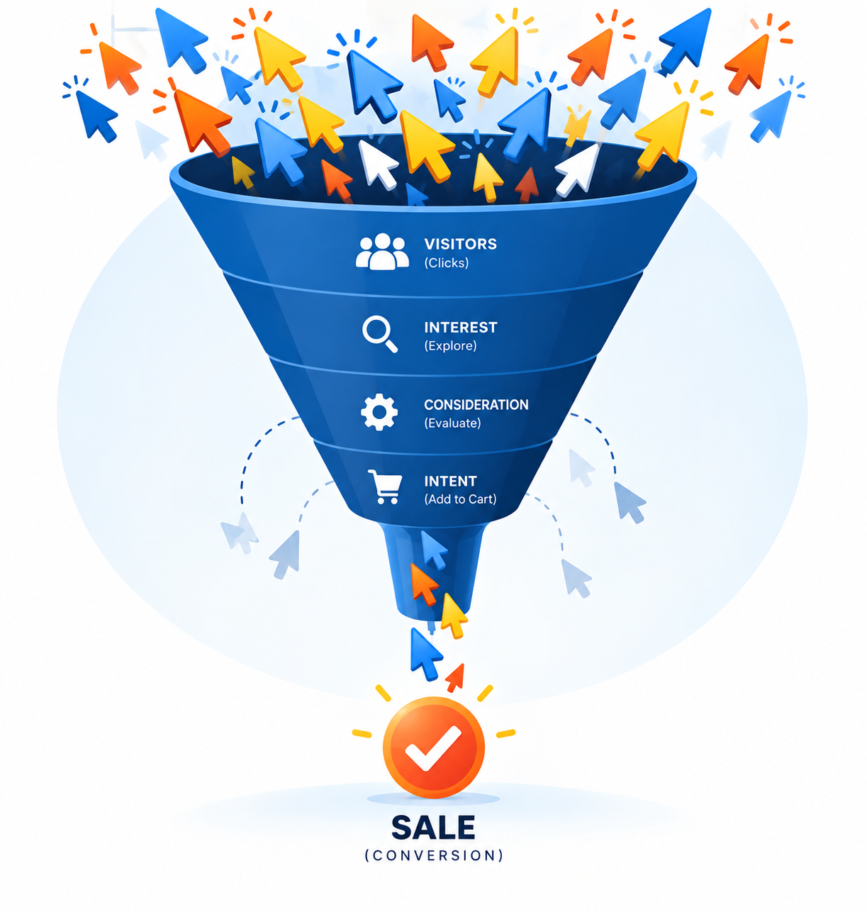
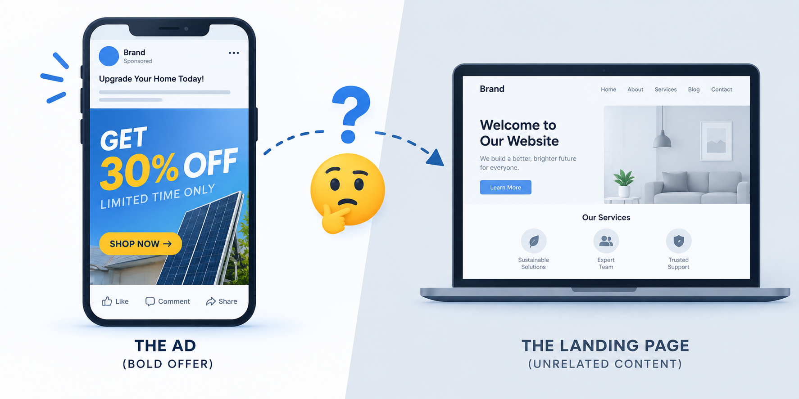
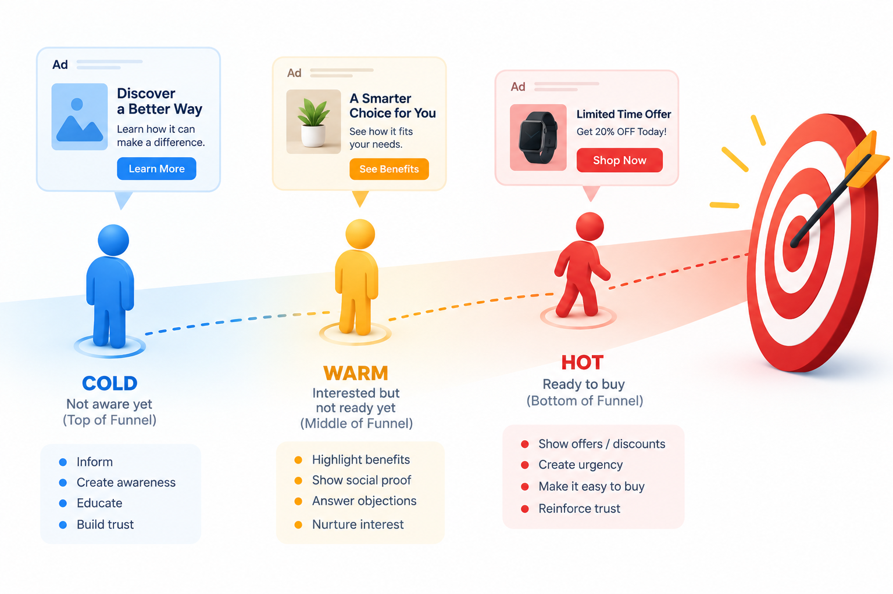
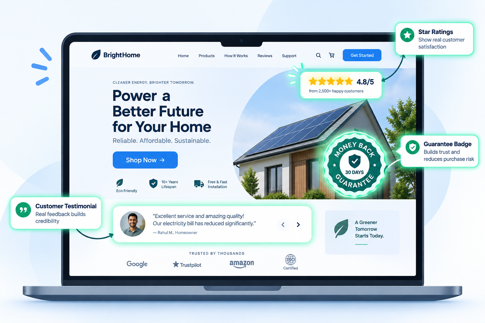
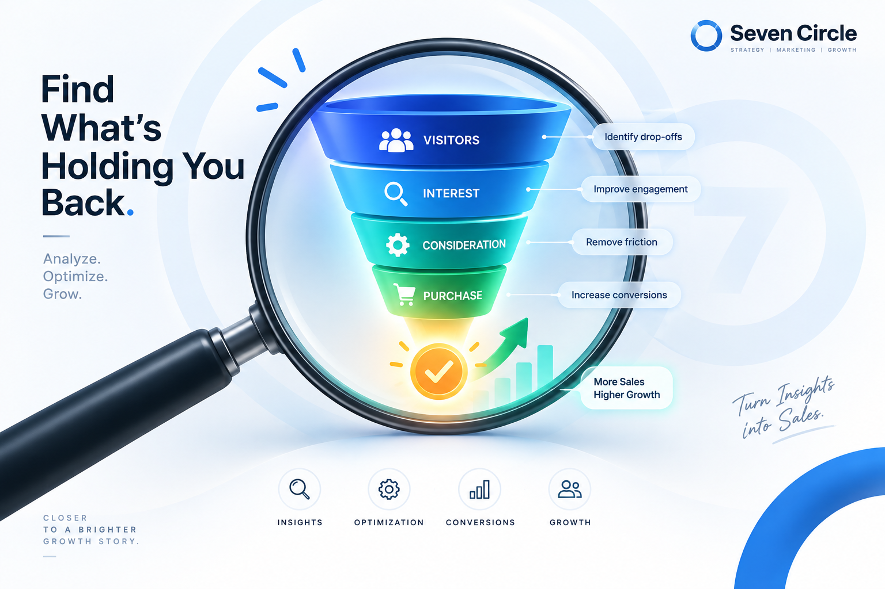

You are paying for attention. People are clicking. The numbers look promising right up until you check the sales.
That gap is frustrating, but it is also useful. A click tells you that the ad created enough interest to earn a next step. When the sale does not follow, the problem is usually somewhere in the handoff.
A click is not a sale. It is an introduction.

You are not bad at ads.
Your funnel is broken.
A paid ad has one job: to make the right person curious enough to continue. The landing page, offer, proof and checkout then have to carry that momentum forward.
If the experience changes tone, hides the value or asks for too much too soon, the click becomes a dead end. More budget will only send more people into the same leak.
The first question is not “How do we get more clicks?” It is “Where do interested people stop moving?”
Why clicks are
not converting.
1. The landing page does not continue the conversation
Someone clicks because the ad promised a specific idea. They land on a slow, generic or confusing page and have to work out what to do next.
- Slow to loadEvery extra second gives intent a chance to disappear.
- Too genericA busy homepage rarely answers the promise made in a focused ad.
- No obvious next stepPeople should not have to hunt for the action you want them to take.
- Difficult on mobileMost ad traffic is impatient, thumb-driven and ready to leave.
The fix: Build a landing experience that repeats the promise, proves the value and makes one action easy.

2. The message changes after the click
When the ad says “Get 30% off” but the page leads with “Welcome to our website,” the visitor has to translate the experience. That moment of uncertainty is where many conversions disappear.
Keep the core promise, language and visual cue consistent from ad to page. The visitor should feel that they arrived exactly where they expected.
3. You are speaking to the wrong stage of the buying journey
Not every click comes from someone who is ready to buy. Cold audiences need context and trust. Warm audiences need proof and a reason to choose now. Hot audiences need a clear offer and a frictionless path to purchase.

The fix: Match the promise, proof and call to action to the audience's level of awareness.
4. There is no trust signal where doubt appears
People hesitate when they cannot tell whether the offer is credible, safe or right for them. Trust is not a decoration added at the bottom of a page; it is a response to a specific doubt.

Use reviews, results, guarantees, clear process details and real customer language at the moment they are needed.
5. The offer is not compelling enough
Sometimes the funnel is working and the offer is simply too vague, too risky or too difficult to compare. “Learn more” is not a value proposition. A clear outcome, a believable reason to act and a simple next step are.
Make the value concrete. Explain what is included, who it is for and what changes after someone says yes.
Find where
the funnel leaks.
Do not judge the whole campaign by its final sales number. Read the movement between stages. Each pattern points to a different problem.

| What the data says | What to investigate |
|---|---|
| High clicks, high bounce | Message mismatch, slow load time or a landing page that does not answer the ad. |
| High clicks, low bounce, no add-to-cart | Weak offer, unclear value or a missing reason to take action now. |
| Add-to-cart, no checkout | Trust, pricing shock, hidden costs or a checkout process that creates friction. |
| Good retargeting, poor cold traffic | Targeting or offer mismatch between people who know you and people discovering you. |
Ads do not
sell alone.
An ad can create attention, but it cannot carry the full weight of a weak website, an unclear offer or a checkout that feels unsafe.
The strongest growth systems treat advertising as one part of a connected experience. The creative earns the click. The page earns understanding. The proof earns belief. The offer earns action.
When those pieces sound like the same brand and guide people in the same direction, the campaign becomes easier to optimize and easier to trust.
Fix the full funnel.
Not just the ad.
At Seven Circle, we look at the complete path from first impression to next action. That can mean:
- Paid advertisingSharper audiences, stronger hooks and creative built around intent.
- Website developmentLanding pages and journeys that make the next step clear.
- CopywritingMessages that connect the promise to the proof and the offer.
- BrandingA recognizable, consistent experience that makes trust easier.
More clicks are not always the answer. Sometimes the smartest growth move is making the clicks you already have work harder.
Questions worth
asking first.
Should I stop running the ads?
Not automatically. First check whether the ad is bringing the right audience and where those visitors leave. Pausing can hide the evidence you need to diagnose the funnel.
How do I know if the landing page is the problem?
Look at bounce rate, time on page, scroll depth and the gap between landing-page visits and the next meaningful action. Pair the numbers with a quick mobile review.
Do I need a new website?
Often, no. A focused landing page, clearer hierarchy and stronger proof can make a bigger difference than rebuilding every page.
What should I fix first?
Fix the earliest meaningful drop-off that you can prove. That creates a cleaner signal for every step that follows.
- A click is interest, not intent to purchase.
- Every handoff should continue the same conversation.
- Find the leak before you buy more traffic.
When clicks are not becoming sales, look beyond the ad. The answer is usually waiting somewhere in the journey after it.
Book a funnel audit ↗